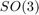
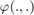
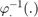
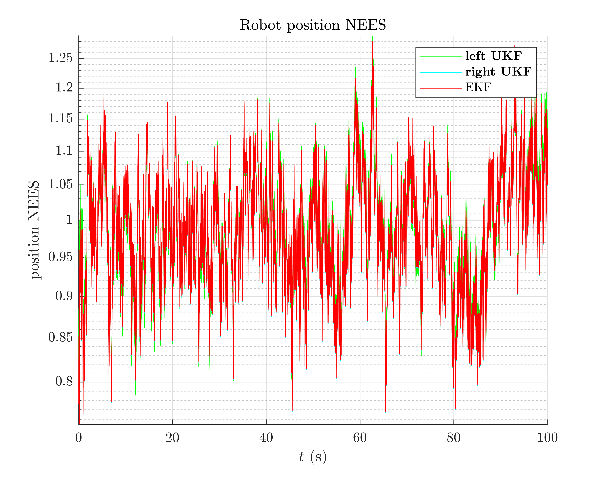

3D Attitude Estimation - Benchmark
Goals of this script:
- implement two different UKFs on the 3D attitude estimation example.
- design the Extended Kalman Filter (EKF).
- compare the different algorithms with Monte-Carlo simulations.
We assume the reader is already familiar with the considered problem described in the related example.
For the given problem, two different UKFs emerge, defined respectively as:
- The state is embedded in  with left multiplication, i.e. the retraction  is the exponential where uncertainty is multiplied on the left by the state. The inverse retraction  is the logarithm.
- The state is embedded in with right multiplication, i.e. the retraction is the exponential where uncertainty is multiplied on the right by the state. The inverse retraction is the logarithm.
We tests the different algorithms with the same noise parameter setting and on simulation with moderate initial heading error.
Contents
Initialization
Start by cleaning the workspace.
clear all; close all;
Simulation Setting
We compare the filters on a large number of Monte-Carlo runs.
% Monte-Carlo runs
N_mc = 100;
The initial values of the heading error has 10 degree standard deviation.
% sequence time (s) T = 100; % IMU frequency (Hz) imu_freq = 100; % IMU noise standard deviation (noise is isotropic) imu_noise_std = [5/180*pi; % gyro (rad/s) 0.4; % accelerometer (m/s^2) 0.3]; % magnetometer % total number of timestamps N = T*imu_freq; % integration step (s) dt = 1/imu_freq;
Filter Design
Additionnaly to the UKFs, we compare them to an EKF. The EKF has the same uncertainty representation as the UKF with right uncertainty representation.
% propagation noise covariance matrix Q = imu_noise_std(1).^2*eye(3); % measurement noise covariance matrix R = blkdiag(imu_noise_std(2).^2*eye(3), imu_noise_std(3).^2*eye(3)); % initial uncertainty matrix P0 = (10/180*pi)^2 * eye(3); % The state is perfectly initialized % sigma point parameters alpha = [1e-3, 1e-3, 1e-3]; % asses UKF function f = @attitude_f; h = @attitude_h; left_phi = @attitude_phi; left_phi_inv = @attitude_phi_inv; right_phi = @attitude_right_phi; right_phi_inv = @attitude_right_phi_inv; weights = ukf_set_weight(length(P0), length(R), alpha); cholQ = chol(Q);
We set error variables before launching Monte-Carlo simulations
ukf_left_errs = zeros(3, N, N_mc); ukf_right_errs = zeros(size(ukf_left_errs)); ekf_errs = zeros(size(ukf_left_errs)); left_ukf_nees = zeros(N, N_mc); right_ukf_nees = zeros(size(left_ukf_nees)); ekf_nees = zeros(size(left_ukf_nees));
Monte-Carlo runs
We run the Monte-Carlo through a for loop.
for n_mc = 1:N_mc disp("Monte-Carlo iteration(s): " + num2str(n_mc) + "/" + num2str(N_mc)); % simulate states and noisy inputs [states, omegas] = attitude_simu_f(T, imu_freq, imu_noise_std); % simulate accelerometer and magnetometer measurements ys = attitude_simu_h(states, T, imu_freq, imu_noise_std); % initialize filter with true state ekf_state = states(1); ukf_left_state = ekf_state(1); ukf_right_state = ekf_state(1); state0 = states(1); state0.Rot = state0.Rot * so3_exp(10/180*pi*randn(3, 1)); ukf_left_P = state0.Rot*P0*state0.Rot'; ukf_right_P = P0; ekf_P = P0; % variables for recording estimates of the Monte-Carlo run ukf_left_states = ukf_left_state; ukf_right_states = ukf_right_state; ekf_states = ekf_state; ukf_left_Ps = zeros(N, 3, 3); ukf_right_Ps = zeros(size(ukf_left_Ps)); ekf_Ps = zeros(size(ukf_left_Ps)); ukf_left_Ps(1, :, :) = ukf_left_P; ukf_right_Ps(1, :, :) = ukf_right_P; ekf_Ps(1, :, :) = ekf_P; % filtering loop for n = 2:N % propagation; [ukf_left_state, ukf_left_P] = ukf_propagation(ukf_left_state, ... ukf_left_P, omegas(n-1), f, dt, left_phi, ... left_phi_inv, cholQ, weights); [ukf_right_state, ukf_right_P] = ukf_propagation(... ukf_right_state, ukf_right_P, omegas(n-1), ... f, dt, right_phi, right_phi_inv, cholQ, weights); [ekf_state, ekf_P] = attitude_ekf_propagation(ekf_state, ... ekf_P, omegas(n-1), dt, Q); % update [ukf_left_state, ukf_left_P] = ukf_update(ukf_left_state, ... ukf_left_P, ys(:, n), h, left_phi, R, weights); [ukf_right_state, ukf_right_P] = ukf_update(ukf_right_state, ... ukf_right_P, ys(:, n), h, right_phi, ... R, weights); [ekf_state, ekf_P] = attitude_ekf_update(ekf_state, ... ekf_P, ys(:, n), R); % save estimates ukf_left_states(n) = ukf_left_state; ukf_right_states(n) = ukf_right_state; ekf_states(n) = ekf_state; ukf_left_Ps(n, :, :) = ukf_left_P; ukf_right_Ps(n, :, :) = ukf_right_P; ekf_Ps(n, :, :) = ekf_P; end % get state trajectory Rots = attitude_get_states(states); ukf_left_Rots = attitude_get_states(ukf_left_states); ukf_right_Rots = attitude_get_states(ukf_right_states); ekf_Rots = attitude_get_states(ekf_states); % record errors ukf_left_errs(:, :, n_mc) = attitude_errors(Rots, ukf_left_Rots); ukf_right_errs(:, :, n_mc) = attitude_errors(Rots, ukf_right_Rots); ekf_errs(:, :, n_mc) = attitude_errors(Rots, ekf_Rots); % record NEES left_ukf_nees(:, n_mc) = attitude_nees(ukf_left_errs(:, :, n_mc), ... ukf_left_Ps, ukf_left_Rots, "LEFT"); right_ukf_nees(:, n_mc) = attitude_nees(... ukf_right_errs(:, :, n_mc), ukf_right_Ps, ukf_right_Rots, "RIGHT"); ekf_nees(:, n_mc) = attitude_nees(ekf_errs(:, :, n_mc), ekf_Ps, ... ekf_Rots, "RIGHT"); end
Monte-Carlo iteration(s): 1/100 Monte-Carlo iteration(s): 2/100 Monte-Carlo iteration(s): 3/100 Monte-Carlo iteration(s): 4/100 Monte-Carlo iteration(s): 5/100 Monte-Carlo iteration(s): 6/100 Monte-Carlo iteration(s): 7/100 Monte-Carlo iteration(s): 8/100 Monte-Carlo iteration(s): 9/100 Monte-Carlo iteration(s): 10/100 Monte-Carlo iteration(s): 11/100 Monte-Carlo iteration(s): 12/100 Monte-Carlo iteration(s): 13/100 Monte-Carlo iteration(s): 14/100 Monte-Carlo iteration(s): 15/100 Monte-Carlo iteration(s): 16/100 Monte-Carlo iteration(s): 17/100 Monte-Carlo iteration(s): 18/100 Monte-Carlo iteration(s): 19/100 Monte-Carlo iteration(s): 20/100 Monte-Carlo iteration(s): 21/100 Monte-Carlo iteration(s): 22/100 Monte-Carlo iteration(s): 23/100 Monte-Carlo iteration(s): 24/100 Monte-Carlo iteration(s): 25/100 Monte-Carlo iteration(s): 26/100 Monte-Carlo iteration(s): 27/100 Monte-Carlo iteration(s): 28/100 Monte-Carlo iteration(s): 29/100 Monte-Carlo iteration(s): 30/100 Monte-Carlo iteration(s): 31/100 Monte-Carlo iteration(s): 32/100 Monte-Carlo iteration(s): 33/100 Monte-Carlo iteration(s): 34/100 Monte-Carlo iteration(s): 35/100 Monte-Carlo iteration(s): 36/100 Monte-Carlo iteration(s): 37/100 Monte-Carlo iteration(s): 38/100 Monte-Carlo iteration(s): 39/100 Monte-Carlo iteration(s): 40/100 Monte-Carlo iteration(s): 41/100 Monte-Carlo iteration(s): 42/100 Monte-Carlo iteration(s): 43/100 Monte-Carlo iteration(s): 44/100 Monte-Carlo iteration(s): 45/100 Monte-Carlo iteration(s): 46/100 Monte-Carlo iteration(s): 47/100 Monte-Carlo iteration(s): 48/100 Monte-Carlo iteration(s): 49/100 Monte-Carlo iteration(s): 50/100 Monte-Carlo iteration(s): 51/100 Monte-Carlo iteration(s): 52/100 Monte-Carlo iteration(s): 53/100 Monte-Carlo iteration(s): 54/100 Monte-Carlo iteration(s): 55/100 Monte-Carlo iteration(s): 56/100 Monte-Carlo iteration(s): 57/100 Monte-Carlo iteration(s): 58/100 Monte-Carlo iteration(s): 59/100 Monte-Carlo iteration(s): 60/100 Monte-Carlo iteration(s): 61/100 Monte-Carlo iteration(s): 62/100 Monte-Carlo iteration(s): 63/100 Monte-Carlo iteration(s): 64/100 Monte-Carlo iteration(s): 65/100 Monte-Carlo iteration(s): 66/100 Monte-Carlo iteration(s): 67/100 Monte-Carlo iteration(s): 68/100 Monte-Carlo iteration(s): 69/100 Monte-Carlo iteration(s): 70/100 Monte-Carlo iteration(s): 71/100 Monte-Carlo iteration(s): 72/100 Monte-Carlo iteration(s): 73/100 Monte-Carlo iteration(s): 74/100 Monte-Carlo iteration(s): 75/100 Monte-Carlo iteration(s): 76/100 Monte-Carlo iteration(s): 77/100 Monte-Carlo iteration(s): 78/100 Monte-Carlo iteration(s): 79/100 Monte-Carlo iteration(s): 80/100 Monte-Carlo iteration(s): 81/100 Monte-Carlo iteration(s): 82/100 Monte-Carlo iteration(s): 83/100 Monte-Carlo iteration(s): 84/100 Monte-Carlo iteration(s): 85/100 Monte-Carlo iteration(s): 86/100 Monte-Carlo iteration(s): 87/100 Monte-Carlo iteration(s): 88/100 Monte-Carlo iteration(s): 89/100 Monte-Carlo iteration(s): 90/100 Monte-Carlo iteration(s): 91/100 Monte-Carlo iteration(s): 92/100 Monte-Carlo iteration(s): 93/100 Monte-Carlo iteration(s): 94/100 Monte-Carlo iteration(s): 95/100 Monte-Carlo iteration(s): 96/100 Monte-Carlo iteration(s): 97/100 Monte-Carlo iteration(s): 98/100 Monte-Carlo iteration(s): 99/100 Monte-Carlo iteration(s): 100/100
Results
We visualize the results averaged over Monte-Carlo sequences, and compute the Root Mean Squared Error (RMSE) averaged over all Monte-Carlo.
benchmark_attitude_helper;
Root Mean Square Error w.r.t. orientation (deg)
-left UKF : 1.09
-right UKF : 1.08
-EKF : 1.08

All the curves have the same shape. Filters obtain the same performances.
We finally compare the filters in term of consistency (Normalized Estimation Error Squared, NEES), as in the localization benchmark.
We finally compare the filters in term of consistency (Normalized Estimation Error Squared, NEES), as in the localization benchmark.
benchmark_attitude_helper_nees;
Normalized Estimation Error Squared (NEES)
-left UKF : 1.03
-right UKF: 1.02
-EKF : 1.02
 All the filters obtain the same NEES and are consistent.
Which filter is the best ? For the considered problem, left UKF, right UKF, and EKF obtain the same performances. This is expected as when the state consists of an orientation only, left and right UKFs are implicitely the same. The EKF obtains similar results as it is also based on a retraction build on (not with Euler angles).
Conclusion
This script compares two UKFs and one EKF for the problem of attitude estimation. All the filters obtain similar performances as the state involves only the orientation of the platform.
You can now:
- compare the filters in different noise setting to see if the filters still get the same performances.
- address the problem of 3D inertial navigation, where the state is defined as the oriention of the vehicle along with its velocity and its position.